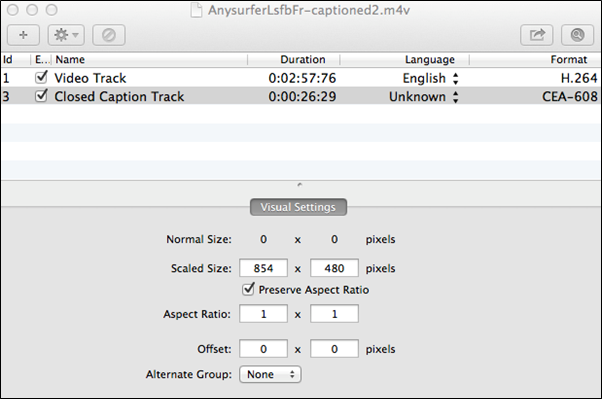
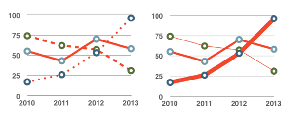

Technieken voor het produceren van Toegankelijke Office Documenten: iBooks Author v2
Auteurs: Jeroen Baldewijns (Licht en liefde), Steven Breughe (Licht en liefde), Bart Simons (AnySurfer)
Inhoudsopgave
- Gebruikersinstructies
- Techniek 1: Gebruik toegankelijke sjablonen
- Techniek 2: Geef de taal van het boek op
- Techniek 3: Voorzie tekstalternatieven bij afbeeldingen en grafische objecten
- Techniek 4: Voorzie tekstalternatieven bij met widgets gemaakte interactieve elementen
- Techniek 5: Gebruik ondertiteling bij video’s
- Techniek 6: Gebruik koppen
- Techniek 7: Gebruik stijlen
- Techniek 8: Gebruik de aangeboden structuurelementen
- Techniek 9: Maak toegankelijke tabellen
- Techniek 10: Maak toegankelijke diagrammen
- Techniek 11: Maak de inhoud beter zichtbaar
- Techniek 12: Maak de inhoud makkelijker te begrijpen
- Techniek 13: De toegankelijkheid checken
- Hulp bij een toegankelijk gebruik
- Referenties en Bronnen
- Dankwoord
Gebruikersinstructies
Op het ogenblik van deze test (24 juli 2014), biedt iBooks Author v2 vrij veel toegankelijkheidsfaciliteiten, die voldoen om vlot toegankelijke digitale boeken te produceren.
Ook als je formulieren, webpagina’s, applicaties of andere dynamische en/of interactieve content wil maken, zullen deze technieken bruikbaar zijn. Toch raden we in dat geval aan om ook de W3C-WAI webtoegankelijkheidsrichtlijnen (WCAG 2.0) te raadplegen, want deze zijn specifiek gericht op dynamische en/of interactieve content.
Bestandsformaten
Het standaard bestandsformaat waarin iBooks Author boeken voor de gebruiker publiceert is het eigen iBooks-formaat van Apple (bestandsnaam eindigt op ‘.ibooks’). Deze bestanden hebben een basis die conform de ePub-standaard is, maar iBooks Author voorziet extra functies die elementen toevoegen die niet voorzien zijn in de ePub-standaard.
Daarnaast biedt iBooks Author een afzonderlijk werkformaat dat je gebruikt bij een boek in aanmaak (vooraleer het gepubliceerd wordt): de bestandsnaam van zo’n bestand eindigt op ‘.iba’.
Verder biedt iBooks Author de mogelijkheid om een boek in twee andere bestandsformaten (PDF en TXT) te bewaren. Deze andere bestandsformaten hebben we niet uitgebreid getest op toegankelijkheid. Ook aan de exportmogelijkheid naar een PDF-document besteden we in dit document geen aandacht omdat je met iBooks Author geen ‘tagged’ PDF kan produceren.
Info voor niet-muisgebruikers
iBooks Author is een app die eerder gericht op hulpverleners, die er toegankelijke content mee kunnen produceren. Om die reden hebben de app enkel benaderd als muisgebruiker (bij het produceren van een iBook komt nogal wat ‘drag-and-drop’-werk met de muis kijken). In tegenstelling tot de andere ADOD-documenten bieden we hier dus geen specifieke informatie voor niet-muisgebruikers.
Verantwoording en testdetails
Het toepassen van deze technieken zal de toegankelijkheid van uw digitale boeken drastisch verhogen, maar het garandeert niet de toegankelijkheid voor om het even welke mogelijke vorm van leesbeperking. Voor boeken waarbij je meer zekerheid wil over de toegankelijkheid, is het aanbevolen ze uit te proberen samen met de eindgebruiker met zijn specifieke leesbeperking, ook met gebruikers van schermuitleesprogramma’s.
De toepassingsspecifieke stappen en schermafbeeldingen in dit document zijn gemaakt in juli 2014 met iBooks Author (versie 2.1.3 (463)) en Mac OS X 10.8.5 en werden bewaard als een DOCX-document. De bestanden werden ook bewaard in andere bestandsformaten (zie ook Techniek 12).
Dit document is louter informatief bedoeld en is noch een aanbeveling, noch een waterdichte garantie op succes. Mocht je fouten vinden in dit document, dan kan je die melden bij: info@anysurfer.be.
Techniek 1: Gebruik toegankelijke sjablonen
Bij het maken van een nieuw iBook vertrek je van een kant en klaar sjabloon. iBooks Author biedt 15 van deze sjablonen aan, die allen een goede basis voor een toegankelijk boek vormen. Deze sjablonen bevatten de volledige basisvormgeving (pagina-oriëntatie, pagina indeling, lettertypes, kleuren, stijlen,…) alsook een aantal inhoudelijke elementen (voorpagina, inhoudsopgave, woordenlijst,…) voor je boek.
Belangrijk om weten: de sjablonen zijn onderverdeeld in twee groepen: ‘Liggend met staand’ en ‘Alleen staand’. Gebruik je een sjabloon uit de categorie ‘Liggend met staand’, dan kan je het resulterende boek op een iPad zowel in liggende (je houdt de iPad vast met een lange zijde onderaan) als in staande (je houdt de iPad vast met een korte zijde onderaan) oriëntatie lezen. In dat geval is de opmaak echter geoptimaliseerd voor weergave in liggende oriëntatie en is het lezen in staande oriëntatie eerder een extraatje; het boek is dus eerder bedoeld om gelezen te worden in liggende oriëntatie. Gebruik je een sjabloon uit de categorie ‘Alleen staand’, dan kan je het resulterende boek op een iPad enkel in staande oriëntatie lezen.
Vanuit de leesbaarheid voor slechtzienden, is deze keuze erg belangrijk. De staande oriëntatie biedt een leesmodus die in de menubalk een weergave-functie biedt, waarmee de lezer van je boek de helderheid en tekengrootte kan aanpassen. De lezer kan dan zelf de grootte van de paragraaftekst aanpassen, waarbij iBooks de regelsprongen aanpast. Slechtzienden zullen om die reden baat hebben bij een boek dat geoptimaliseerd is voor het lezen in de staande oriëntatie. Dat betekent echter niet dat een boek in de liggende oriëntatie per definitie ontoegankelijk is, het zal wel minder gebruiksvriendelijk zijn voor slechtziende gebruikers.
Let bij de keuze vaneen sjabloon wel op de gebruikte kleuren en contrasten. Een sjabloon waarbij veelvuldig afbeeldingen onder de tekstblokken doorlopen, zal minder vlot leesbaar zijn voor slechtzienden dan een sjabloon dat tekst en afbeeldingen visueel scheidt en dat goede contrasten biedt tussen tekst en achtergrond.
Zelf een sjabloon maken
Je kan met iBooks Author ook zelf sjablonen maken. Dit bevelen we enkel aan voor wie voldoende ervaring heeft met grafische vormgeving. Anders riskeer je al gauw te vervallen een ontoegankelijk ontwerp van een sjabloon. Maak je toch sjablonen, zorg er dan voor dat je daarbij alle toegankelijkheidstechnieken uit dit document toepast.
Techniek 2: Geef de taal van het boek op
Om het voor hulpmiddelen (zoals schermuitleesprogramma’s) mogelijk te maken een boek accuraat weer te geven, is het belangrijk om de natuurlijke taal van het boek te definiëren. Ook als de taal van slechts één alinea of tekstfragment afwijkt van de taal van de rest van het boek, is het nodig om deze taalwijziging aan te geven. Op deze manier weet het schermuitleesprogramma dat het de taal van de spraaksynthese moet aanpassen.
Goed om weten: als je een nieuw boek aanmaakt wordt de taal voor dat boek automatisch aangepast aan de taal van je besturingssysteem. Met andere woorden: als de taal van je gebruiksomgeving voor je besturingssysteem ingesteld staat op Nederlands, zal iBooks Author elk nieuw boek Nederlands gebruiken als taalinstelling.
Wijzig de standaardtaal van je boek
- Kies de menu-optie: Weergave > Toon infovenster.
- Klik op de knop Documentinfo in het Infovenster:
- Klik op de rubriek Document.
- Kies in het uitklapmenu Taal de gewenste taal voor het boek:
Wijs een taal toe aan een geselecteerd tekstfragment
- Selecteer het tekstfragment waarvan je de taal wil wijzigen.
- Kies de menu-optie: Weergave > Toon infovenster.
- Klik op de knop Tekstinfo in het Infovenster:
- Klik op de rubriek Meer.
- Kies in het uitklapmenu Taal de gewenste taal voor het geselecteerde tekstfragment:
Techniek 3: Voorzie tekstalternatieven bij afbeeldingen en grafische objecten
Als je afbeeldingen of andere grafische objecten (zoals diagrammen, kaarten, grafieken,…) in een iBook gebruikt, dan is het belangrijk dat de informatie die je met de afbeelding wil overbrengen, ook beschikbaar is voor wie de afbeelding niet kan zien. Dit doe je door een toegankelijkheidsbeschrijving toe te voegen aan elke afbeelding. Deze toegankelijkheidsbeschrijving krijgt de ziende lezer van het boek niet te zien, maar wordt wel opgepikt door een schermlezer.
Als een afbeelding erg complex is omdat ze louter visueel erg veel inhoudelijke informatie aanbiedt, omschrijf je in detail de volledige inhoudelijke boodschap in de toegankelijkheidsbeschrijving.
Ook de grafische elementen die je in iBooks Author creëert met de functie ‘Vormen’ moet je van zo’n toegankelijkheidsbeschrijving voorzien als de gecreëerde vorm betekenisvol is binnen de content van je boek. Zo niet, dan laat je de toegankelijkheidsbeschrijving beter oningevuld. De lezer van het boek zal de vorm dan helemaal niet opmerken.
Elementen die je in iBooks Author creëert met de functie ‘Tekstvakken’, hoef je niet van een toegankelijkheidsbeschrijving te voorzien, omdat de inhoud van het tekstvak prima uitgelezen wordt door de schermlezer. Voege je hier toch een toegankelijkheidsbeschrijving aan toe, dan creëer je zeker geen toegankelijkheidsprobleem, maar dit resulteert wel in weergave van dubbele informatie door de schermlezer, wat het voor de lezer een beetje verwarrend kan maken.
Tips bij het schrijven van een toegankelijkheidsbeschrijving
- Zoek een antwoord op de vraag: “Welke informatie bevat de afbeelding?”.
- Als de afbeelding geen betekenisvolle informatie bevat, laat het tekstalternatief dan leeg.
- Als de afbeelding betekenisvolle informatie bevat, zorg er dan voor dat àl die informatie beschreven wordt.
- Houd de alternatieve tekst eerder kort, bij voorkeur niet langer dan 40 tekens.
- Vermijd het gebruik van leestekens in de toegankelijkheidsbeschrijving, want die worden door de schermlezer mee uitgesproken.
- Als er een langere beschrijving nodig is (bijvoorbeeld bij een diagram, een stratenplan, een organigram,…), zorg er da voor dat die alle informatie bevat die het grafisch element visueel overbrengt aan de goed ziende lezer van je boek.
- Voor veel complexe afbeeldingen kan de techniek van ‘vocale beschrijving’ aangewezen zijn, waarbij je in detail in je eigen woorden beschrijft wat er in de afbeelding te zien is (bijvoorbeeld voor een kunstwerk, en architecturaal beeld,…). Hou je bij de vocale beschrijving strikt bij wat er te zien is en voeg geen eigen veronderstellingen of interpretaties toe.
- Een goede benadering bij het formuleren van een uitvoerige beschrijvende tekst, is jezelf in te beelden dat je iemand de afbeelding aan het uitleggen bent tijdens een telefoongesprek.
- Test de deugdelijkheid van je toegankelijkheidsbeschrijvingen door het boek (waarbij alle afbeeldingen zijn aangevuld met toegankelijkheidsbeschrijvingen) te laten nalezen door een buitenstaander.
Bij wijze van alternatief kan je alles ook omkeren. Je kan alle informatie, die een afbeeldingen biedt, gewoon verwerken in de tekst van het document. Je hoeft dan strikt gezien geen tekstalternatief te voorzien. Zo krijgt de afbeelding een louter illustratief karakter en mist de lezer niets wanneer hij/zij het boek leest. Het grootste nadeel van deze methode is dat je dubbele info (visueel/tekstueel) geeft voor mensen die het boek visueel kunnen lezen. Daarom raden we deze alternatieve techniek af.
Een tekstalternatief toevoegen aan een afbeelding of grafisch object
- Selecteer de afbeelding of het grafisch object.
- Kies de menu-optie: Weergave > Toon infovenster.
- Klik op de knop Widgetinfo in het Infovenster:
- Klik op de rubriek Lay-out.
- In het veld Toegankelijkheidsbeschrijving geef je een correcte tekstuele omschrijving in die alle visueel waarneembare informatie woordelijk omschrijft:
Wat met de titel en het bijschrift?
Het paneel waar je de toegankelijkheidsbeschrijving ingeeft, biedt ook de mogelijkheid om voor elke afbeelding een titel en een bijschrift op te geven. De titel wordt boven de afbeelding getoond in het boek. Het bijschrift wordt onder de afbeelding getoond in het boek. Dat is een belangrijk verschil met de toegankelijkheidsbeschrijving, die visueel niet getoond wordt in het boek en dus enkel onderhuids aanwezig is.
Bij deze voorzieningen willen we wat toelichting inzake toegankelijkheid geven:
- Je kan een titel of een bijschrift gerust gebruiken, ze doen niets af aan de toegankelijkheid van het boek dat je maakt.
- Een titel en/of bijschrift mogen echter niet als een alternatief voor de toegankelijkheidsbeschrijving beschouwd worden.
- Als je bij een afbeelding enkel een titel of een bijschrift invult, dan wordt dit ook automatisch opgenomen in het veld voor de toegankelijkheidsbeschrijving. Ga in dat geval na of deze automatische doorvoer voldoet aan de regels voor het schrijven van een toegankelijkheidsbeschrijving.
Techniek 4: Voorzie tekstalternatieven bij met widgets gemaakte interactieve elementen
iBooks Author biedt de mogelijkheid om interactieve inhoud toe te voegen aan een boek door het gebruik van ‘widgets’. Door gebruik van widgets kan je boeken maken die erg aantrekkelijk zijn voor educatieve doeleinden.
Het goede nieuws hierbij is dat het gebruik van widgets niet hoeft te betekenen dat een iBook toegankelijkheidsproblemen krijgt. Je kan immers bij elk widget een toegankelijkheidsbeschrijving toevoegen, dat de toegankelijkheid ervan verzekert. Bij een widget is het ook aanbevolen om een titel met een label toe te voegen. Dat label zorgt ervoor dat de schermlezer-gebruiker in detail geïnformeerd over het type van interactieve afbeelding:
- Selecteer de interactieve afbeelding.
- Kies de menu-optie: Weergave > Toon infovenster.
- Klik op de knop Widgetinfo in het Infovenster:
- Klik op de rubriek Lay-out.
- In het veld Toegankelijkheidsbeschrijving geef je een correcte tekstuele omschrijving in die alle visueel waarneembare informatie woordelijk omschrijft.
- Vink Titel aan en kies in het menu Label het bijhorende label-type. Typ vervolgens de gewenste titel boven de afbeelding.
We overlopen per type widget nog een paar aandachtspunten op het vlak van toegankelijkheid:
- Galerie (fotogalerie waarheen de lezer van het boek kan doorbladeren): je kan slechts één toegankelijkheidsbeschrijving ingeven voor de volledige fotogalerie, daarom verdient het aanbeveling om per foto ook een afzonderlijk bijschrift in te geven dat die foto beschrijft.
- Interactieve afbeelding (afbeelding waarbij de lezer van het iBook kan inzoomen op bepaalde onderdelen van die afbeelding): geef een betekenisvolle toegankelijkheidsbeschrijving op, waarin je extra uitleg geeft over de zones waarop de ziende lezer van het iBook kan inzoomen.
- 3D (afbeelding die de lezer van het boek beeldvullend vanuit om het even welke hoek kan bekijken): geef een toegankelijkheidsbeschrijving op en meld in die toegankelijkheidsbeschrijving dat de afbeelding een 3D afbeelding is die enkel door zienden in 3D kan bekeken worden.
- Pop-over (afbeelding waaruit een venster met extra uitleg openschuift, zodra je erop klikt): de tekst in het pop-over venster is perfect leesbaar voor schermlezers. Alleen weet je als gebruiker van een schermlezer niet dat de afbeelding een pop-over afbeelding is. Dat meld je dus best in de toegankelijkheidsbeschrijving.
- Zijkolom + scrollbalk (afbeelding zit ingebed in een kader met een extra tekstbeschrijving, waar je met een scrollbalk doorheen bladert): geef een toegankelijkheidsbeschrijving op, zowel de toegankelijkheidsbeschrijving als de extra beschrijvende tekst worden door de schermlezer voorgelezen
- Toets (een ondervraging met meerkeuzevragen die je kan inlassen om te checken of de info uit het voorbije hoofdstuk goed begrepen werd): de toets is vlot bruikbaar voor hulpmiddelengebruikers, gebruik perfect beschrijvende omschrijving in de toegankelijkheidsbeschrijving als de lezer de foto moet kunnen zien om de vraag te kunnen beantwoorden.
Techniek 5: Gebruik ondertiteling bij video’s
iBooks Author biedt ook een widget om een video op te nemen in een iBook. We behandelen dit even afzonderlijk omdat video specifieke eisen stelt op vlak van toegankelijkheid.
Om te beginnen gelden voor video dezelfde aanbevelingen dan voor andere content die je met widgets maakt:
- Voorzie elke video van een toegankelijkheidsbeschrijving (zie Techniek 3) die de inhoudelijke boodschap van het videofragment omvat.
- Voorzie elke video bij voorkeur ook van een titel met ‘Film’ als label, zodat het voor de lezer van je boek duidelijk is dat er een videofragment te zien is.
Belangrijk is echter dat je een videofragment van ondertiteling voorziet. Enerzijds wordt de video hierdoor toegankelijk voor mensen met een auditieve beperking. Anderzijds zijn de ondertitels op de platforms waarop iBooks werkt (iOS en Mac OS X) qua grootte, kleur en lettertype aanpasbaar aan de noden van een slechtziende:
Het is niet het opzet van dit document om de techniek voor het maken van ondertiteling in detail uit te leggen. Wel willen we u de basis-workflow voor het maken van een ondertitelde video meegeven:
- Zorg ervoor dat de video het MP4-formaat heeft (doe een conversie naar dit formaat indien nodig)..
- Maak een ondertitelingsbestand in het SCC-formaat (aandachtspunt: de ondertitels mogen slechts 32 tekens per regel bevatten). We hebben hiervoor twee mogelijke tools gevonden:
- Een betalende oplossing: MovieCaptioner (14 dagen gratis te testen: http://www.synchrimedia.com/downloads.html)
- Een gratis oplossing: de ondertitels met een gratis tool (zoals Subtitle Horse) maken in het veel courantere SRT-formaat en ze dan omzetten naar SCC-formaat met de Converter van 3playmedia (http://www.3playmedia.com/services-features/tools/captions-format-converter/)
- Koppel de ondertitels aan het MP4-bestand. Ook dit kan op twee manieren:
- Een betalende oplossing: Compressorn van Apple
- Een gratis oplossing : Subler, enkel voor Mac OS X (http://subler.nl.softonic.com/mac):

- Importeer het resulterende MP4-bestand via de widget Media in het iBook.
- Check of het filmpje in je iBook afspeelt met weergave van ondertiteling. Hiervoor moet je zowel op een iOS-apparaat als op een Mac de voorziening voor Bijschriften geluid aanzetten. Deze vind je onder Instellingen > Toegankelijkheid > Horen > Ondertiteling en bijschriften.
Een bijzonder uitgebreide uitleg over het maken van ondertiteling bij videobestanden vind je hier: http://www.synchrimedia.com/Get_Started_with_Video_Captioning.zip
Techniek 6: Gebruik koppen
Elk digitaal boek moet gestructureerd worden, wil de lezer het op een gemakkelijke manier kunnen begrijpen. De efficiëntste manier om dit te bereiken is het gebruik van ‘echte koppen’, die een logische scheiding maken tussen opeenvolgende hoofdstukken en secties in het boek. Een ‘echte kop’ is veel meer dan een stukje tekst dat enkel wat grafische opsmuk kreeg, zoals: vette letters, een ander lettertype, een gecentreerde uitlijning,… Het zijn structurele elementen die een rangorde hebben en die de hulpmiddelengebruiker een beter inzicht geven in de structuur van het document.
‘Echte koppen’ maak je door gebruik te maken van kopstijlen.
Als je de sjablonen gebruikt die Apple bij iBooks Author levert, zijn de stijlen voor hoofdstukken (hoogste kopniveau) en secties (tweede kopniveau) en alle benodigde onderliggende kopniveaus reeds voorzien. Je hoeft ze enkel nog correct toe te passen.
Tips bij het gebruik van koppen
- Gebruik de standaard aangeboden kopstijlen (‘Hoofdstuktitel’, ‘Sectietitel’, ‘Koptekst 1’, ‘Koptekst 2’ , ‘Koptekst 3’,…) .
- Als je koppen nestelt, doe dit dan op een correcte wijze: de onderliggende koppen van een ‘Hoofdstuktitel’ zijn ‘Sectietitel’; de onderliggende koppen van een ‘Sectietitel’ zijn ‘Kop 1’; de onderliggende koppen van een ‘Kop 1’ zijn ‘Kop 2’; de onderliggende koppen van een ‘Kop 2’ zijn ‘Kop 3’ enz…
- Sla nooit kopniveaus over.
Een kop definiëren als een hoofdstuk of een sectie
- Kies de menu-optie: Weergave > Toon stijlen.
- Selecteer de koptekst en klik in het paneel met de alineastijlen op de stijl ‘Hoofdstuktitel’ voor een hoofdstuk of ‘Sectietitel’ voor een sectie:
- Eventueel kan je met een dubbele muisklik op de hoofdstuk- of sectietitel ook nog een voorvoegsel of een nummering toevoegen, wat strikt gezien niet noodzakelijk is voor toegankelijkheid, maar wat voor de gebruiker van een schermlezer wel extra gebruiksvriendelijkheid biedt:
Kopstijlen toepassen op koppen binnen een sectie
- Kies de menu-optie: Weergave > Toon stijlen.
- Selecteer de koptekst(en) die je aan een kopstijl wil koppelen en klik in het paneel met de alineastijlen op de gewenste kopstijl:
Techniek 7: Gebruik stijlen
Parallel aan Techniek 6 over kopstijlen, moet je ook streven naar het consequent toepassen van de stijlen die de iBooks Author-sjablonen standaard aanbieden. Het aanbod is bij de meeste sjablonen zo groot dat je wellicht niet de nood voelt om extra eigen stijlen toe te voegen.
Tekstvormgeving toepassen buiten de stijlen probeer je best zo weinig mogelijk te doen. Bij een correct gebruik van stijlen zal de lezer makkelijker begrijpen waarom een stuk tekst op een bepaalde manier is vormgegeven. Dat is vooral handig als er diverse redenen kunnen zijn om dezelfde vormgeving toe te passen. Zo is het bijvoorbeeld gebruikelijk om schuingedrukte letters te gebruiken voor beklemtoonde tekst, Latijnse termen en soortnamen. Aan de toegepaste stijl kan de lezer in zo’n geval herkennen om welk van de drie gevallen het gaat.
Stijlen toepassen doe je op exact dezelfde manier dan kopstijlen toepassen (zie Techniek 6). Dit geldt zowel voor alineastijlen als tekenstijlen.
Techniek 8: Gebruik de aangeboden structuurelementen
8.1. Opsommingslijsten
Als je opsommingslijsten maakt, is het belangrijk dat je die als ‘echte lijsten’ definieert. Anders interpreteert een schermuitleesprogramma de lijst-items als afzonderlijke korte alinea’s in plaats van als een gestructureerde en samenhangende lijst van gerelateerde items.
Voor het aanmaken van lijsten bieden de diverse sjablonen heel wat kan en klare lijststijlen aan.
Genummerde of niet genummerde lijsten creëren
- Selecteer het tekstblok waarvan je een lijst wil maken.
- Kies de menu-optie: Weergave > Toon stijlen.
- Klik de lijststijl aan die je wil toepassen op het geselecteerde tekstblok.
8.2 Inhoudsopgave
Elk iBook-sjabloon in iBooks Author genereert automatisch een inhoudsopgave op basis van de in het boek gebruikte koppen. Je hoeft hier zelf dus helemaal niets voor te doen, tenzij de kopstijlen correct toepassen (zie Techniek 6).
De beste manier om een inhoudsopgave te creëren bestaat erin om consequent kopstijlen, zoals Kop 1, Kop 2,… (zie ook Techniek 6), toe te passen op de koppen die je in de inhoudsopgave wenst. Op basis daarvan kan je automatisch een inhoudsopgave laten genereren door de functie Inhoudsopgave.
De inhoud van een inhoudsopgave bepalen
- Kies de menu-optie: Weergave > Toon infovenster.
- Klik op de knop Documentinfo in het Infovenster:
- Klik op de rubriek Inhoudsopgave.
- Klik op de ‘+’-knop om een kopniveau toe te voegen aan de inhoudsopgave. Klik op de ‘-’-knop om een kopniveau te verwijderen uit de inhoudsopgave..
8.3 Woordenlijst
Elk iBook-sjabloon in iBooks Author biedt een voorziening voor een woordenlijst. Aan deze lijst kan kernwoorden toevoegen die belangrijk zijn binnen het boeken. Op basis van zo’n woordenlijst krijgt de lezer van het boek een extra methode om doorheen de content van het boek te zoeken. Ook voor de gebruiker van een schermlezer biedt zo’n woordenlijst een extra navigatiemethode, die geen overbodige luxe is bij gebrek aan visueel navigeren.
Een woordenlijst maken
- Klik op Woordenlijst in de linker kolom Overzicht boek.
- Klik op de plus-knop in de kolom Woordenlijst en typ het woord in dat je aan de woordenlijst wil toevoegen.
- Typ in de rechter kolom de verklaring van dat woord.
- Herhaal deze stappen voor elk woord dat je aan de woordenlijst wil toevoegen:
8.4 Paginanummering
Een iBook bestaat net zoals een gedrukt boek uit pagina’s. Paginanummers zijn belangrijk omdat ze verwijzingen vanuit de inhoudsopgave mogelijk maken en omdat ze de gebruiker van het boek een bijkomende manier bieden om digitaal doorheen het boek te bladeren of direct naar een bepaalde pagina te gaan. Ook voor de gebruiker van een schermlezer vormt de paginanummering een extra manier om binnen een boek te navigeren.
Voor het genereren van paginanummers hoef je echter doorgaans zelf niets te ondernemen, omdat paginanummering in alle standaard sjablonen van iBooks Author voorzien is.
8.5 Meta-gegevens
Aan elk iBook kan je een aantal meta-gegevens toevoegen, waarvan het belang op het eerste zicht niet zo duidelijk is. De boektitel en de auteur van het boek zijn daar voorbeelden van. Het is essentieel dat je minimaal deze meta-gegevens correct invult, want in de iBooks lees-app zal een schermlezer deze twee gegevens gebruiken bij het overlopen van de boekenplank. Als je de titel en de auteur niet correct opgeeft bij de creatie van het boek, dan zal een schermlezen bij het overlopen van de boekenplank in de iBooks lees-app dit boek aankondigen als “onbekende titel, onbekende auteur”, en dan weet de gebruiker van een schermlezer helemaal niet over welk boek het gaat…
De titel en auteur van een boek opgeven
- Kies de menu-optie: Weergave > Toon infovenster.
- Klik op de knop Documentinfo in het Infovenster:
- Klik op de rubriek Document.
- Vul de auteur van het boek in in het veld Auteur,
- Vul de titel van het boek in in het veld Titel:
Techniek 9: Maak toegankelijke tabellen
Als je tabellen in een iBook inlast, is het belangrijk dat die duidelijk en op een correcte manier worden gestructureerd. Dit bevordert de verstaanbaarheid van de informatie in de tabellen en zorgt ervoor dat de gebruiker van een schermlezer de contextuele informatie (rijhoofding, kolomhoofding) krijgt bij het uitlezen van de tabelinhoud.
Tips voor toegankelijke tabellen
- Gebruik tabellen enkel informatie die geschikt is voor weergave in tabelvorm, niet voor paginaopmaak.
- Gebruik de tabelfunctie voor het creëren van tabellen. Creëer niet zelf ‘handgemaakte’ tabellen met de tabtoets of (nog erger) de spatiebalk, want deze zullen niet als tabel herkend worden door hulpmiddelen.
- Hou tabellen zo eenvoudig mogelijk door samengevoegde cellen te vermijden en door eventueel complexe dataverzamelingen zo mogelijk op te splitsen in meerdere kleinere tabellen.
- Als een tabel opgesplitst is over meerdere pagina’s, zorg er dan voor dat de kolomhoofdingen bovenaan elke nieuwe pagina herhaald worden. Zorg er in dat geval ook voor dat de tabel opgesplitst wordt tussen twee rijen in plaats van midden in een rij.
- Maak een tekstuele samenvatting van de essentiële tabelinhoud en geef daarin ook een verklaring van de eventueel gebruikte afkortingen in de tabel.
- Zorg ervoor dat eventuele bijschriften bij tabellen een antwoord bieden op de vraag: “Wat is het doel van de tabel en hoe is hij georganiseerd?”.
- Tabelcellen die als koptekst voor kolommen of rijen gebruikt worden, en die dus als label gebruikt worden om onder- of naastliggende cellen te verduidelijken, moeten ook als koptekst gedefinieerd worden. Op deze manier kan de schermlezer ook de kopteksten bij datacellen vermelden.
- Tracht je te beperken tot slechts één rij en één kolom met kopteksten.
- Kopteksten moeten beknopt maar duidelijk geformuleerd worden.
- Zorg ervoor dat er geen tekstboeken naast de tabel op dezelfde pagina voorkomen, want dan gaat de schermlezer de mist in.
Een tabel met kopteksten toevoegen
- Kies de menu-optie: Weergave > Toon infovenster.
- Klik op de knop Tabelinfo in het Infovenster:
- Klik op de rubriek Tabel.
- Met de knoppen bij Kop-/voetteksten bepaal je hoeveel kolommen en rijen als koptekst moeten gebruikt worden:
Techniek 10: Maak toegankelijke diagrammen
Diagrammen kan je gebruiken om gegevens in één oogopslag begrijpelijker voor te stellen. Het is echter van groot belang dat gegevens die het diagram bevat, toegankelijk zijn voor alle lezers van het iBook. Alle basis toegankelijkheidsinspanningen die je voor de rest van je document doet, moet je ook toepassen op je grafieken en de gegevens in die grafieken. Gebruik bijvoorbeeld vorm én kleur in plaats van kleur alleen om informatie over te brengen (zie Techniek 11.3) of gebruik goede contrasten bij het creëren van diagrammen (zie Techniek 11.2).
Een diagram dat je met de diagramfunctie van iBooks Author maakt, is per definitie een grafisch element dat de schermlezer niet kan vertalen naar een gesproken of een brailleweergave. Ook de tekstuele informatie die je in het infovenster Diagraminfo kan ingeven (titel, legenda, labels, as-waarden,…), worden in de grafiek ingebed en zijn niet door de schermlezer uit te lezen. Het is daarom erg belangrijk dat je de het diagram voorziet van een toegankelijkheidsbeschrijving (zie Techniek 3). Let er hierbij op dat de toegankelijkheidsbeschrijving alle info bevat die je visueel met het diagram wil overbrengen. Eventueel kan je bij de widgetinfo ook nog een titel en/of bijschrift toevoegen. Ook deze worden door een schermlezer opgepikt.
Nog een paar bedenkingen bij grafieken
- Als je lijndiagrammen maakt, gebruik dan, naast verschillende kleuren, ook de opmaaktools om verschillende types van stippellijnen en/of verschillende lijndiktes te creëren. Hierdoor maak je het lijndiagram makkelijker interpreteerbaar voor mensen met kleurenblindheid..
 - Als je staafdiagrammen maakt, gebruik dan patronen voor het opvullen van vormen. Zo maak je het staafdiagram makkelijker interpreteerbaar voor mensen met kleurenblindheid.
- Wijzig de standaardkleuren voor diagrammen zoveel mogelijk in kleurpaletten met goede contrasten. In iBooks Author zijn bijvoorbeeld de kleurenschema’s ‘Heldere kleuren’ en ‘Plezier’ goed contrasterende kleurenschema’s.
- Wijzig voorgedefinieerde kleurenpaletten zo nodig met het oog op betere contrasten (zie ook Techniek 11.2).
Techniek 11: Maak de inhoud beter zichtbaar
11.1 Vormgeving van tekst
Bij het vormgeven van tekst tracht je, met het oog op een goede visuele leesbaarheid:
- Een tekengrootte tussen 12 en 18 punten te gebruiken voor normale paragraaftekst.
- Een normaal letterbeeld te gebruiken in plaats van ‘vet’ of ‘licht’. Als je toch vette letters gebruikt, bijvoorbeeld om iets te benadrukken, ga daar dan spaarzaam mee om.
- Vooral de meest gangbare lettertypes te gebruiken, die gekenmerkt zijn door voldoende tussenruimte tussen de tekens en vlot leesbare hoofd- en kleine letters. Schreefloze lettertypes (zoals Arial of Verdana) worden over het algemeen als makkelijker leesbaar ervaren dan geschreefde lettertypes (zoals Times New Roman of Garamond).
- Het gebruik van lange stukken tekst in hoofdletters, in schuine druk of met onderstreping te vermijden.
- De normale (of eventueel vergrote) spatiëring tussen de tekens te gebruiken. Vermijd verkleinde tekenspatiëring.
11.2 Gebruik goede contrasten
De visuele presentatie van tekst en tekstafbeeldingen moeten een contrastratio van ten minste 4.5:1 hebben. Met de volgende voorbeelden van telkens verschillend gekleurde tekst op een witte achtergrond, proberen we een idee te geven van goede en slechte contrastratio’s:
- Zeer goed contrast (Tekstkleur=zwart, Achtergrond=wit, Contrast Ratio=21:1)
- Aanvaardbaar contrast (Tekstkleur=#767676, Achtergrond=wit, Contrast Ratio=4.54:1)
- Onaanvaardbaar contrast (Tekstkleur=#AAAAAA, Achtergrond=wit, Contrast Ratio=2.32:1)
Gebruik ook steeds een egaal gekleurde achtergrond en dus geen achtergrond met een patroon of geen afbeelding of foto als achtergrond.
Om na te gaan of de kleuren die je in een boek gebruikt, voldoende contrasterend zijn, kan je online contrast checkers gebruiken, zoals:
- Juicy Studio: Luminosity Color Contrast Ratio Analyzer
- Joe Dolson Color Contrast Comparison
- TPG Contrast Analyser
11.3 Vermijd het gebruik van alleen kleur
Alleen kleuren gebruiken om op een visuele manier informatie over te brengen, een actie aan te geven of een object visueel te onderscheiden, is uit den boze. Mensen met een verminderde kleurperceptie mislopen daardoor immers informatie.
Als je wil contoleren of er in je iBook toch kleur gebruikt wordt om betekenisvolle informatie over te brengen, kan je daarvoor een schermafbeelding maken van je pagina en dit checken door toepassing van een online tool, die je schermafbeelding omzet naar grijswaarden. Een mogelijke tool hiervoor is:
11.4 Baseer je niet enkel op zintuiglijke waarneming om inhoud te begrijpen
Als je in je tekst instructies geeft die helpen om de informatie in je iBook te begrijpen en/of te gebruiken, dan mogen die niet enkel steunen op zintuiglijke kenmerken, zoals kleuren of vormen. Een voorbeeld om dit te verduidelijken:
- Maak in je tekst nooit een onderscheid tussen afbeeldingen door enkel naar hun verschijningsvorm (bijvoorbeeld: ‘de grootste…’) te verwijzen. In de plaats daarvan nummer je de afbeeldingen en refereer je daarnaar.
11.5 Vermijd tekstafbeeldingen
Overweeg eerst of het mogelijk is om tekst als ‘echte tekst’ in je document op te nemen, alvorens een grafisch element te gebruiken om die tekst weer te geven (bijvoorbeeld om zeker te zijn van een bepaalde lettertype/kleurcombinatie). Als dat niet mogelijk is (bijvoorbeeld voor tekst in een logo waaraan je niets mag wijzigen), zorg dan zeker voor een correct gedefinieerd tekstalternatief (zie ook Techniek 3).
Techniek 12: Maak de inhoud makkelijker te begrijpen
12.1 Gebruik ‘klare taal’
Door de nodige aandacht en zorg te besteden aan een consistent en makkelijk taalgebruik, zal het iBook beter inhoudelijk toegankelijk, vlotter navigeerbaar en makkelijker interpreteerbaar zijn voor alle gebruikers:
- Schrijf zo duidelijk mogelijk in korte zinnen.
- Geef de verklaring van afkortingen en acroniemen.
- Zorg ervoor dat pagina’s niet te ‘druk’ overkomen. Dit doe je door voldoende witruimte in te lassen en niet te overdrijven met verschillende lettertypes, kleuren en afbeeldingen.
- Als bepaalde termen of stukken tekst herhaald worden doorheen een document, spel ze dan overal identiek.
In Vlaanderen kunnen we twee bronnen aanbevelen die uitvoerig uitleggen hoe je ‘klare taal’ gebruikt:
- KHK Klaar voor Taal: www.klaartje.eu
- Wablieft: www.wablieft.be
12.2 Koppel hyperlinks steeds aan een betekenisvol tekstfragment
Hyperlinks kunnen een zeer krachtig navigatie-instrument bieden, als ze de gebruiker een goed beeld geven waarnaar ze verwijzen. Zo niet, dan vormen hyperlinks eerder hindernissen die slechts met vallen en opstaan kunnen worden genomen.
Om zeker te zijn dat de lezer van jouw iBook het doel van een hyperlink begrijpt, zorg je ervoor dat de linktekst ook betekenisvol is, als je die buiten de context van het document zou lezen. Het is bijvoorbeeld niet goed om “Meer informatie” als linktekst te gebruiken in de zin: “Meer informatie over de trein- en busregelingen vindt u hier”. Je kan de link dan beter koppelen aan de tekst “trein- en busregelingen”.
Techniek 13: De toegankelijkheid checken
Op het moment van de test (1 augustus 2014) biedt iBooks Author geen eigen functie om een boek op eventuele toegankelijkheidsproblemen te controleren, alvorens het te publiceren. Bovendien is het ook niet mogelijk om vanuit iBooks Author een boek te exporteren naar een HTML-pagina, wat het onmogelijk maakt om de toegankelijkheid te checken op basis van een geëxporteerde HTML-versie.
Om een beeld te krijgen over de toegankelijkheid van je boek, creëer je een voorvertoning (de knop Voorvertoning staat in de knoppenbalk van iBooks Author) van het boek op een iPad. Probeer dit testboek eens helemaal door te lezen met de in iOS voorziene toegankelijkheidsfaciliteiten: de VoiceOver spraakweergave, de zoomfunctie voor slechtzienden, omgekeerde kleuren, ondertiteling bij video,… Tracht je hierbij in te leven in de functiebeperking van de blinde, slechtziende, dove of slechthorende lezer van je boek. Voor deze inleving kan je bijvoorbeeld een blinddoek aandoen of het geluid van je iPad uitzetten.
Voor andere documenttypes wordt vaak aanbevolen om ze om te zetten naar een ‘tagged’ PDF-bestand. Vervolgens kan je dit bestand door Acrobat Reader automatisch laten checken op toegankelijkheidsproblemen. iBooks Author biedt helaas niet de mogelijkheid om een tagged PDF te produceren. Een PDF-document zonder tags is per definitie niet toegankelijk en dus niet relevant om de toegankelijkheid van je iBook te checken.
Hulp bij een toegankelijk gebruik
Meer informatie over de toegankelijkheidsfaciliteiten die iBooks Author biedt om beter bruikbaar te zijn voor gebruikers met een beperking, vind je in de hulpfunctie van iBooks Author:
- Open het menu: Help.
- Vul uw zoekterm in het Zoekveld.
Referenties en Bronnen
- iBooks Author Help
- GAWDS Writing Better Alt Text [http://www.gawds.org/show.php?contentid=28]
- Publishing with iBooks Author, An Introduction to Creating Ebooks for the iPad, Nellie McKesson & Adam Witwer, O’Reilly, February 2012
- iBooks Accessibility, Luis F. Pérez, M. Ed.
Dankwoord
Auteurs: Jeroen Baldewijns (Licht en liefde), Steven Breughe (Licht en liefde), Bart Simons (AnySurfer), Jan Richards (Editor, Inclusive Design Research Centre)
Dit document werd geproduceerd binnen het Accessible Digital Office Document (ADOD) Project (http://inclusivedesign.ca/accessible-office-documents).
Dit project is een initiatief van Inclusive Design Research Centre, OCAD University, dat deel uitmaakt van een EnAbling Change Partnership project met Government of Ontario en UNESCO (United Nations Educational, Scientific and Cultural Organization).
Verantwoording
De gebruikte benamingen en de presentatie van het materiaal in deze publicatie drukken geenszins een opinie van de UNESO uit, aangaande de rechtspositie van een land, grondgebied of stad of van zijn autoriteiten op het vlak van de afbakening van grenzen.
De auteur is verantwoordelijk voor de keuze en presentatie van de inhoudelijke topics en opinies in dit document, die niet noodzakelijk de opinie van UNESCO is.
Deze publicatie werd gerealiseerd onder de verantwoordelijkheid van het AnySurfer-project van Blindenzorg Licht en Liefde vzw. Blindenzorg Licht en Liefde is volledig verantwoordelijk voor de kwaliteit van de vertaling naar het Nederlands. Hoewel we deze vertaling met grote zorg hebben uitgevoerd, kunnen we eventuele vertaalfouten niet uitsluiten. Mocht u toch fouten vinden in dit document, dan kan u dit steeds melden op info@anysurfer.be.

Accessible Digital Office Documents (ADOD) Project by Inclusive Design Research Centre (IDRC) is licensed under a Creative Commons Attribution-ShareAlike 3.0 Unported License.
Updated: 19 Aug 2013